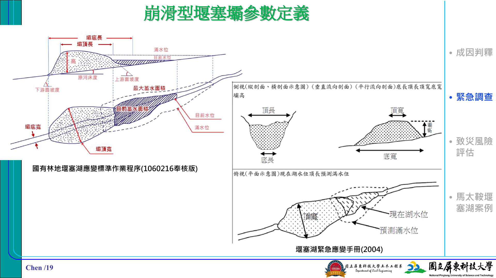
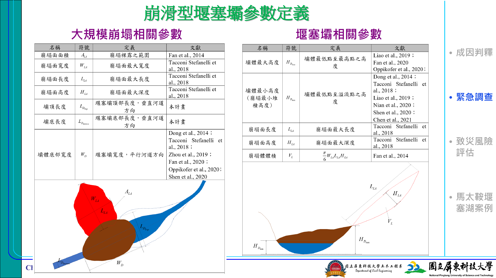
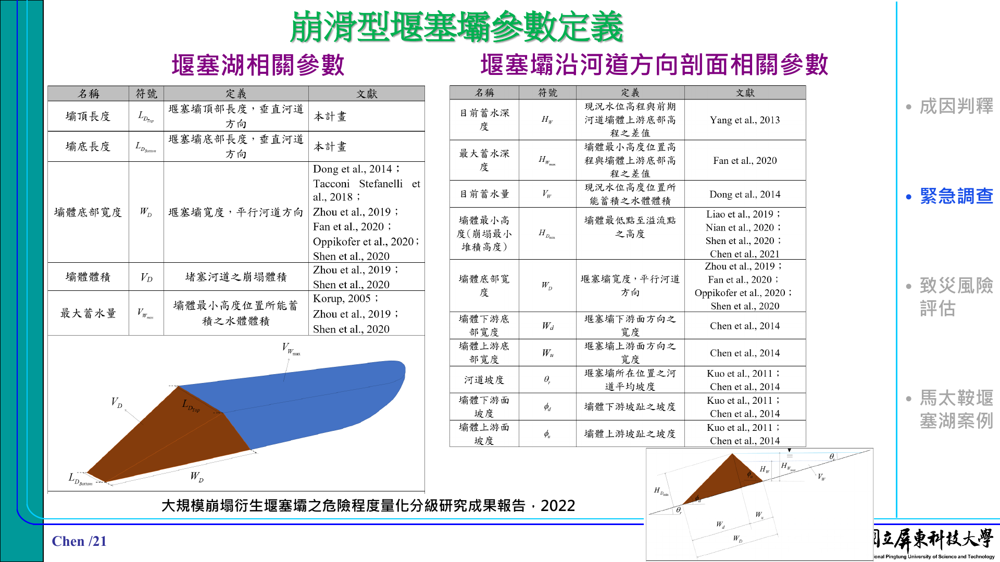
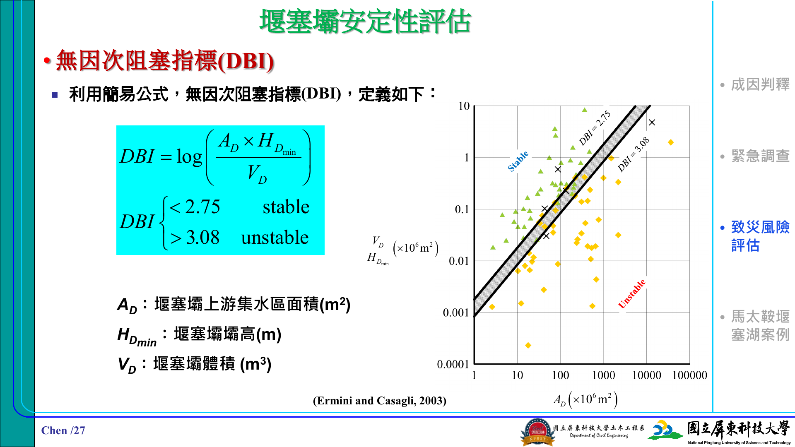
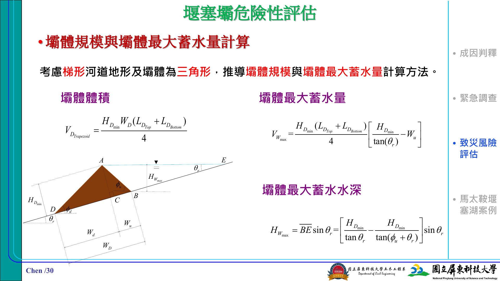
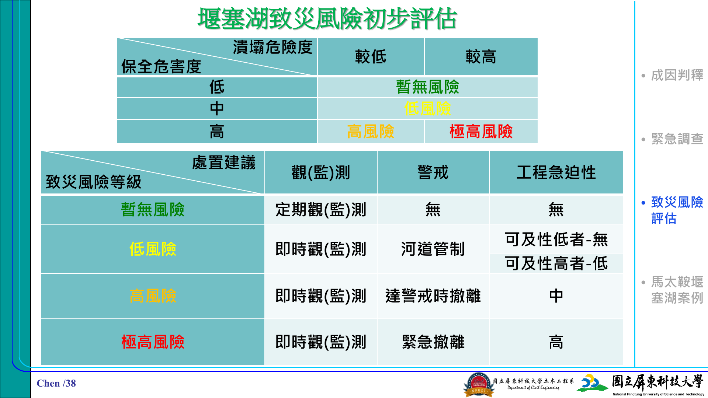

▣
資料可靠度
目前已納入壩體幾何、上游集水區、蓄水量、潰壩歷時、下游河寬與保全對象條件。
以堰塞湖專家判讀流程重組：先看風險結論，再回溯壩體參數、安定性指標、下游保全與處置策略。
預設採馬太鞍案例參數，展示從緊急調查、安定性判讀到保全危害度與處置建議的完整工作流。
目前已納入壩體幾何、上游集水區、蓄水量、潰壩歷時、下游河寬與保全對象條件。

對照壩高、壩頂長、壩底寬、蓄水面積與滿水位等調查欄位。

協助判讀崩塌面積、崩塌體積、壩體高度、寬度與長度量測位置。

用於理解蓄水面積、蓄水體積、河道縱坡與沿河道方向剖面。

說明上游集水區、壩高與壩體體積如何共同影響安定性初判。

提供壩體體積、最大蓄水深、河道幾何與潰口情境的概念對照。

對照潰壩危險度、保全危害度、觀測、警戒與工程急迫性建議。
頁 19：壩體、蓄水位與剖面參數。
頁 20：崩塌土體與堰塞壩量測項目。
頁 21：蓄水與沿河道方向剖面。
頁 27：無因次阻塞指標與穩定/不穩定區間。
頁 30：壩體幾何與最大蓄水深推估。
頁 38：致災風險等級與應變建議。